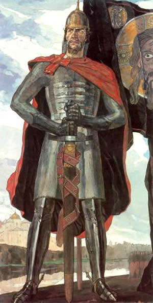

12 век.
Киевская Русь в 13-м веке
13-й в. в истории Руси начался без особых внешних потрясений, но в разгар бесконечных внутренних усобиц. Князья делили земли, боролись за власть. А вскоре к внутренним бедам Руси присоединилась опасность с внешней стороны. Жестокие завоеватели из глубин Азии под предводительством Темучина (Чингизхана, что значит «великий хан») начали свои действия. Войска кочевников-монголов безжалостно уничтожали людей и завоевывали земли. Вскоре половские ханы попросили помощи у русских князей, и те согласились выступить против надвигающегося врага. В 1223 г. состоялась битва на р. Калке. Из-за разрозненности действий князей и отсутствия единого командования русские ратники понесли большие потери и оставили поле боя. Войска монголов преследовали их до самых окраинных земель Руси. Разграбив их и опустошив, они не двинулись дальше. В 1237 г. в пределы Рязанского княжества вступили войска внука Темучина - Батыя. Рязань пала. Завоевания продолжились. В 1238 г. на р. Сити войско Юрия Всеволодовича вступило в схватку с ратью захватчика, но проиграло татаро-монголам. При этом южнорусские князья и Новгород остались в стороне, не пришли на помощь. В 1239-1240 гг., пополнив войско, Батый предпринял новый поход на Русские земли. В это время незатронутые северо-западные районы Руси (Новгородские и Псковские земли) подверглись опасности со стороны обосновавшихся в Прибалтике рыцарей-крестоносцев, которые хотели силой распространить католическую веру на территории Руси. Шведы и немецкие рыцари собирались объединиться во имя общей идеи, но первыми выступили шведы. В 1240 г. (15 июля) произошла Невская Битва: шведский флот вошел в устье р. Невы. Новгородцы обратились за помощью к великому владимирскому князю Ярославу Всеволодовичу. Его сын - молодой князь Александр - с войском отправился в путь, рассчитывая на внезапность и быстроту натиска. Хотя его войско уступало по численности сопернику (даже с присоединившимися новгородцами и простолюдинами), стратегия Александра сработала. В этом сражении Русь одержала победу, а Александр получил прозвище Невский. Тем временем немецкие рыцари набрались сил и начали военные действия против Пскова и Новгорода. И снова на помощь пришел Александр. 5 апреля 1242 г. состоялось Ледовое побоище: на льду Чудского озера сошлись войска. Александр снова одержал победу - благодаря смене порядка строя и слаженным действиям. Да и обмундирования рыцарей сыграло против них: когда они отступали, лед стал ломаться под их тяжестью. В 1243 г. образовалась Золотая Орда. Формально русские земли не входили в состав этого государства, но были подвластны ему: обязаны были пополнять казну Орды, а князья должны были получать ярлыки на княжение на ханских ставках.
В течение второй половины 13-го в. Орда не раз совершала опустошительные походы на Русь. Разорялись города и села. 1251-1263 гг. – княжение Александра Невского. Из-за нашествий завоевателей, в процессе которых уничтожались поселения, пропало множество памятников культуры Древней Руси 10-13-го вв. В сохранности остались церкви, соборы, иконы, а также произведения литературы, предметы религиозного культа и ювелирные украшения. В основе древнерусской культуры лежит наследие восточнославянских племен. На нее оказывалось влияние кочевыми народами, варягами. Кроме того, особенности развития культуры связаны с принятием христианства, а также влиянием Византии и стран Западной Европы.
С принятием христианства стала распространяться грамотность, развиваться письменность, началось просвещение и стали внедряться византийские обычаи. Эти изменения повлияли и на одежду 13-го в. на Руси. Ее покрой был простой и единообразный, вещи отличались главным образом тканью. Костюм стал более длинным и свободным, не подчеркивающим фигуру, а придающим ей статичность. Знать носила дорогие заграничные ткани (бархат, парчу, тафту, шелк) и меха (соболь, выдра, куница). Простой люд использовал в одежде холщовую ткань, заячий и беличий мех, а также овчину.
Монголо-татарское нашествие на Русь
В начале 13-го в. в степях Центральной Азии монголо-татары образовали военно-феодальную державу. Это было объединение не единого народа, а десятков кочевых племен. В 1206 г. великим ханом (Чингисханом) был провозглашен Темучин. Им были организованы опустошительные походы против народов Азии (в частности, татарских племен, союзником которых был Китай). Добившись победы, он подчинил себе все соседние кочевые племена.
Чингисхан создал сильное боеспособное войско, основой которого была четкая организация и строжайшая дисциплина. Все войско делилось на десятки, сотни и тысячи. Десять тысяч воинов составляли тумен - самостоятельную армию. За трусость в бою одного смертной казни предавались десять воинов. В армии работала хорошо поставленная разведка - данные собирались купцами, послами и пленными. Использовались достижения военного искусства и техники покоренных государств. Так, после вторжения в Китай армия Чингисхана взяла на вооружение стенобитные машины, камнеметные и огнеметные орудия. Окружив себя талантливыми и верными полководцами, Чингисхан к 1211 г. захватил земли бурят, якутов, енисейских киргизов и уйгуров. Летом 1219 г. 200-тысячная армия Чингисхана вторглась в пределы Средней Азии. Были разгромлены и сожжены г. Бухара, Самарканд, Ургенч, Мерв. В 1222 г. полчища Чингисхана вторглись в Закавказье, огнем и мечом прошли через Иран и Кавказ. Опустошив страну аланов (Осетия), монголы разгромили половцев и весной 1223 г. вышли к берегам Дона. Угроза монгольского завоевания нависла над половцами, которые обратились за помощью к русским князьям, предупреждая их о грозящей опасности.
В условиях феодальной раздробленности далеко не все князья поддержали половцев. Объединенная русско-половецкая рать приняла сражение с основными силами монголов 31 мая 1223 г. на р. Калке. Сражение завершилось полной победой монголо-татар. После сражения на Русь вернулась лишь десятая часть ратников. Причиной поражения русских стало полное отсутствие общего командования. Спустя 13 лет войско монголо-татар, которое возглавлял внук Чингисхана - Батый, разгромив Волжскую Болгарию, начало завоевание Руси. В 1236 г. Батый вторгся на территорию Северо-Восточной Руси. Первой жертвой его нашествия стало Рязанское княжество. В условиях раздробленности каждое княжество оборонялось своими силами. Вслед за Рязанским войско Батыя завоевало Владимиро-Суздальское и Смоленское княжества. В 1239-1240 гг. Батый совершил второй поход на Русь. Под удар попали юго-западные княжества. Не встретив организованного сопротивления, он покорил Черниговское, Переяславское и Галицко-Волынское княжества.
После нашествия в 1242 г. на Европу Батый создал мощное государство - Золотую Орду (со столицей Сарай на Нижней Волге). На Руси было установлено монголо-татарское иго. Монголы сохранили на захваченных землях прежнюю систему государственного устройства и общественных отношений, но установили над ними контроль. Ханы Орды стали выдавать разрешения (ярлыки) на великое княжение на Руси. Для сбора дани монголо-татары ввели институт баскаков (сборщиков дани). Сначала дань собирали натурой, затем деньгами. Монгольское завоевание привело к длительному экономическому, политическому и культурному упадку русских земель. Многие территории были разорены и опустошены, разрушены города, наиболее квалифицированные ремесленники увезены в Орду, начался демографический спад. По подсчетам археологов, из известных по раскопкам 74 городов Руси в 12-13-м вв. большая часть была уничтожена, а остальные превратились в села. Несмотря на всю тяжесть последствий монголо-татарского ига, Русь смогла сохранить свою государственность, религию и культуру.
Правление Золотой Орды
Образование и формирование Золотой Орды начинается в 1224 г. Государство было основано монгольским ханом Батыем, внуком Чингисхана, и до 1266 г. входило в состав Монгольской Империи, после чего стало независимым, сохранив лишь формальное подчинение Империи. Большую часть населения государства составляли половцы, волжские булгары, мордовцы, марийцы. В 1312 г. Золотая Орда стала исламским государством. В 15-м в. единое государство распалось на несколько ханств, главным среди которых была Большая Орда. Большая Орда просуществовала до середины 16-го в., а вот другие ханства распались значительно раньше. Название «Золотая Орда» впервые было использовано русскими уже после падения государства, в 1556 г., в одном из исторических сочинений. До этого государство в разных летописях обозначалось по-разному.
Территории Золотой Орды
Монгольская Империя, из которой пошла Золотая Орда, занимала территории от Дуная до Японского моря и от Новгорода до Юго-Восточной Азии. В 1224 г. Чингисхан разделил Монгольскую Империю между своими сыновьями, и одна из частей досталась Джучи. Спустя несколько лет сын Джучи - Батый - предпринял несколько военных походов и расширил территорию своего ханства на запад, новым центром стало Нижнее Поволжье. С этого момента Золотая Орда начала постоянно захватывать новые территории. В результате под власть ханов Золотой Орды во времена ее расцвета попадала большая часть современной России (кроме Дальнего Востока, Сибири и Крайнего Севера), Казахстан, Украина, часть Узбекистана и Туркмении. В 13-м в. Монгольская Империя, захватившая власть на Руси (монголо-татарское иго), находилась на грани распада, и Русь перешла под власть Золотой Орды. Однако русские княжества не управлялись непосредственно ханами Золотой Орды. Князья лишь вынуждены были платить дань золото-ордынским чиновникам, а вскоре и эта функция перешла под контроль самих князей. Однако Орда не собиралась терять завоеванные территории, поэтому ее войска регулярно совершали карательные походы на Русь, чтобы держать князей в повиновении. Русь оставалась подвластна Золотой Орде практически до самого распада Орды.
Государственное устройство и система управления Золотой Орды
Поскольку Золотая Орда вышла из Монгольской Империи, во главе государства стояли потомки Чингисхана. Территория Орды была поделена на наделы (улусы), в каждом из которых был свой хан, однако более мелкие улусы подчинялись одному главному, где и правил верховный хан. Улусное деление поначалу было неустойчивым и границы улусов постоянно менялись. В результате административно-территориальной реформы в начале 14-го в. были выделены и закреплены территории основных улусов, а также введены должности улусных управленцев - улусбеков, которым подчинялись более мелкие чиновники - визири. Помимо ханов и улусбеков, существовало народное собрание - курултай, которое созывалось только в экстренных случаях. Золотая Орда была полувоенным государством, поэтому административные и военные должности часто совмещались. На самых важных должностях сидели члены правящей династии, которые имели родство с ханом и владели землями; более мелкие административные должности могли занимать феодалы средней руки, а армия набиралась из народа. Столицами Орды были:
- Сарай-Бату (недалеко от Астрахани) - при правлении Батыя.
- Сарай-Берке (недалеко от Волгограда) - с первой половины 14-го в.
В целом Золотая Орда представляла собой многоукладное и многонациональное государство, поэтому, помимо столиц, существовало несколько крупных центров в каждой из областей. Орда также имела торговые колонии на Азовском море.
Торговля и экономика Золотой Орды
Золотая Орда была торговым государством, активно занималась куплей-продажей, а также имела множественные торговые колонии. Основными товарами являлись: ткани, льняные холсты, оружие, украшения и другие ювелирные изделия, меха, кожа, мед, лес, зерно, рыба, икра, оливковое масло. С территорий, принадлежавших Золотой Орде, начинались торговые пути в Европу, Среднюю Азию, Китай и Индию. Кроме того, Орда получала значительную часть своих доходов от военных походов (грабежей), сбора дани (иго на Руси) и завоевания новых территорий.
Конец эпохи Золотой Орды
Золотая орда состояла из нескольких улусов, подчинявшихся власти верховного хана. После смерти хана Джанибека в 1357 г. началась первая смута, вызванная отсутствием единого наследника и желанием ханов побороться за власть. Борьба за власть и стала основной причиной дальнейшего распада Золотой Орды. В 1360-х гг. от государства открепился Хорезм. В 1362 г. отделилась Астрахань, земли на Днепре были захвачены литовским князем. В 1380 г. татары были разгромлены русскими в Куликовской битве при попытке нападения на Русь. В 1380-1395 гг. смута прекратилась и власть снова подчинялась великому хану. В этот период были совершены удачные походы татаров на Москву. Однако в конце 1380-х гг. Ордой были предприняты попытки нападения на территории Тамерлана, которые оказались безуспешными. Тамерлан разбил войска Орды, разорил поволжские города. Золотая Орда получила удар, который стал началом распада империи. В начале 15-го в. из Золотой Орды образовались новые ханства (Сибирское, Казанское, Крымское и др.). Ханствами правила Большая Орда, однако зависимость новых территорий от нее постепенно ослабевала, а также слабла власть Золотой Орды над Русью. В 1480 г. Русь окончательно освободилась от гнета монголо-татар. В начале 16-го в. Большая Орда, оставшаяся без мелких ханств, прекратила свое существование. Последним ханом Золотой Орды был Кичи Мухаммед.
Князь Александр Ярославич Невский

Князь Ярослав Всеволодович скончался неожиданно, 30 сентября 1246 г. Но и правивший тогда Ордой хан Гуюк умер, пока братья Андрей и Александр добирались до ордынской столицы. Ханша Огул Гамиш, ставшая хозяйкой Каракорума, повелела отдать великое княжение Андрею, младшему из братьев. В управление Александру достались земли южной Руси, включая и сам Киев. Но Александр Невский, несмотря на это, вернулся в Новгород. Папа Римский, Иннокентий 4-й, предлагал Александру помощь в борьбе с Ордой в обмен на принятие католичества. Но предложение это было в весьма категоричной форме отвергнуто князем. Ярлык на великое княжение Александр получил в 1252 г., когда Огул Гамиш была свергнута ханом Мункэ. Хан вызвал Александра в Сарай, столицу Золотой Орды, где ему и была выдана грамота на княжение. Однако Андрей Ярославич имел сильную поддержку со стороны галицкого князя Даниила Романовича и тверского князя. Он отказался подчиниться решению хана, но скоро покинул пределы Северо-Восточной Руси, преследуемый отрядом монголов под командованием Неврюя.
Князь Александр Невский, биография которого полна военных побед, был вынужден вести примиренческую политику в отношении Золотой Орды. Этот враг был слишком силен. Во время поездки в Орду в 1262 г. ярко проявились такие качества Александра Невского, как дипломатичность и умение вести переговоры. Тогда ему удалось избавить своих воинов от участия во многих завоевательных набегах монголов. Но, возвращаясь обратно, князь заболел и умер в стоящем на Волге Городце. Это произошло 14 ноября 1263 г. Существует версия, что князь был отравлен еще в Орде, но она не может быть доказана. Святого благоверного князя Александра Невского стали почитать уже в 1280-х гг. во Владимире. Однако официальная канонизация произошла намного позднее. Князь Александр был единственным в Европе правителем, который не пошел на компромисс с Римом и католической церковью ради сохранения власти.
Битва на Чудском озере
Битва, случившаяся 5 апреля 1242 г. на льду Чудского озера у острова Вороний Камень, вошла в историю как одна из важнейших в истории государства, как сражение, избавившее земли Руси от всяких притязаний Ордена ливонских рыцарей. Хотя ход битвы известен, осталось много спорных вопросов. Так, нет точной информации о количестве воинов, принявших участие в битве на Чудском озере. Ни в дошедших до нас летописях, ни в «Житии Александра Невского» эти данные не приводятся. Предположительно, со стороны новгородцев в сражении участвовало от 12 тыс. до 15 тыс. воинов. Численность противника составляла от 10 тыс. до 12 тыс. При этом рыцарей среди немецких воинов было немного, основная часть войска - ополченцы, литы и эсты. Выбор Александром места сражения был продиктован и тактическими, и стратегическими расчетами. Занятая войсками князя позиция позволила перекрыть нападавшим все подходы к Новгороду. Наверняка помнил князь и о том, что зимние условия дают в противоборстве с тяжелыми рыцарями определенные преимущества. Рассмотрим, как проходило Ледовое побоище (кратко). Если боевой порядок крестоносцев историкам прекрасно известен и именуется клином, или, по версии летописей, «великой свиньей» (на флангах - тяжелые рыцари, а более легко вооруженные воины - внутри клина), то о построении и расположении новгородской рати точных сведений нет. Вполне возможно, что это был традиционный «полчный ряд». Рыцари, не имевшие информации о количестве и местонахождении войск Невского, решили наступать по открытому льду. Хотя подробного описания битвы на Чудском озере летописи не приводят, восстановить схему Ледового побоища вполне возможно. Клин рыцарей врезался в центр сторожевого полка Невского и прорвал его оборону, устремившись дальше. Возможно, этот «успех» был заранее предусмотрен князем Александром, поскольку далее нападающие встретили массу непреодолимых препятствий. Зажатый в клещи рыцарский клин утратил стройность рядов и маневренность, что оказалось для нападавших серьезным негативным фактором. Атака засадного полка, до того момента не участвовавшего в сражении, окончательно склонила чашу весов в сторону новгородцев. Сошедшие с коней рыцари в своих тяжелых доспехах на льду становились практически беспомощными. Спастись бегством удалось только части нападавших, которых русские ратники преследовали, по словам летописца, «до Соколиного берега». После победы русского князя в Ледовом побоище на Чудском озере Ливонский орден был вынужден заключить мир, полностью отказавшись от притязаний на земли Руси. По договору обе стороны вернули плененных в ходе сражения воинов. Стоит отметить, что на льду Чудского озера впервые в истории войн пешее войско одержало победу над тяжелой конницей, являвшейся для Средневековья грозной силой. Александр Ярославич, с блеском победивший в Ледовом побоище, максимально использовал фактор внезапности и учел рельеф местности. Военно-политическое значение победы Александра переоценить сложно. Князь не только отстоял для новгородцев возможность вести дальнейшую торговлю с европейскими странами и выйти к Балтике, но и защитил северо-запад Руси, ведь в случае поражения Новгорода угроза захвата Орденом северо-запада Руси стала бы вполне реальной. Кроме того, князь отсрочил натиск немцев на восточно-европейские территории. 5 апреля 1242 г. - одна из важнейших дат в истории Руси.